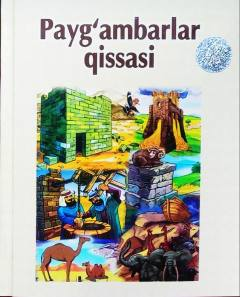

PQPayg'ambarlar hayoti va sinovlari haqida islomiy qissalar to'plami.
Bu kitob Qur'on va islomiy manbalarga asoslangan payg'ambarlar haqidagi qissalarni o'z ichiga oladi. Ibrohim alayhissalomning butlarga qarshi kurashi va sanamlarni sindirishi kabi voqealar sodda tilda bayon etilgan. Kitob bolalar va keng kitobxonlar uchun mo'ljallangan diniy-tarbiyaviy asar hisoblanadi.